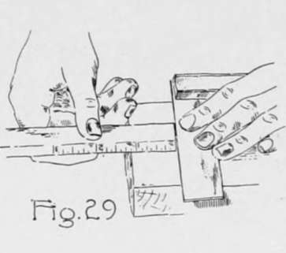
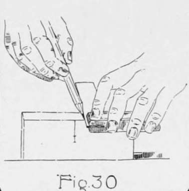
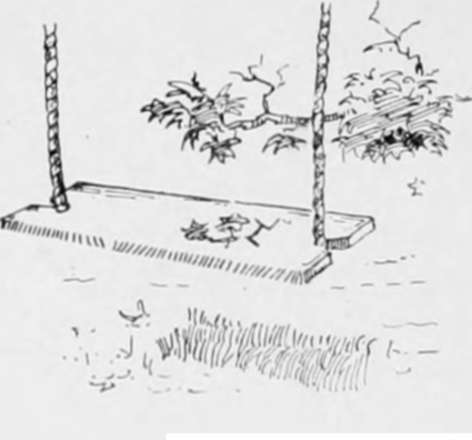
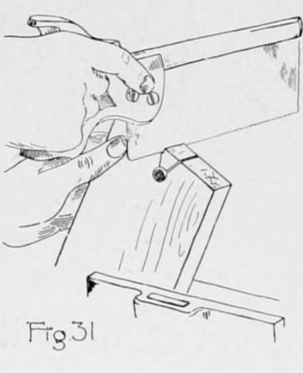
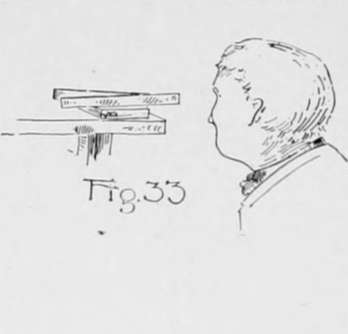

Planing. Part 2
Description
This section is from the book "Beginning Woodwork At Home And In School", by Clinton Sheldon Van Deusen. Also available from Amazon: Beginning Woodwork At Home And In School.
Planing. Part 2
(j) Place the bench-hook on the bench with its smaller block clamped in the vise and its larger block on top. Place the piece on the bench-hook with the joint side against the block. Set the block-plane for a thin shaving and place it on its side on the bench, with the face of the plane toward the right side of the bench-hook (Fig. 28). Hold the block-plane in this position with the right hand, and move it from you, keeping it against the right side of the bench-hook. During this process the left hand holds the piece against the bench-book and at the same time exerts a slight pressure on the piece toward the right. The above operation is neither easy to describe nor easy for the beginner to master. It requires a combination of forces of varying amounts: a comparatively strong one exerted by the right hand downward to keep the side of the block-plane against the bench, a lighter one exerted by the right hand toward the left to keep the lower edge of the plane in contact with the lower right hand edge of the bench-hook, a still lighter one exerted on the piece by the left hand toward the right to keep the end of the piece against the block plane, but not strong enough to push the plane away from the bench-hook.
Continue the above method of block-planing until the end appears smooth.
(k) Block-plane the other end as explained in j.
(1) Measure the width of one end of the piece and set the gage to one-half of this width. With the gage-block against the joint side, gage a line on the working face a little more than 1" long, one end being at the end of the piece.
(m) With the rule and try-square used as in Fig. 29, measure 3/4" and 1" from the end and draw knife lines about 1/4" long across the line gaged in 1.
(n) Clamp the piece in the vice with the end up and, laying the rule on lengthwise of the end, locate a point 1/2" each side of the end of the gage line made in 1. Draw through each of these points a pencil line across the end as in Fig. 30.
(o) Using the blade of the try-square as a straight-edge, draw lines on the working face from the ends of the lines just drawn to the point on the gage line 1" from the end.
(p) Using the 12" bit, bore a hole as in Chapter II, n, at the point 3/4" from the end on the gage line.
(q) Place the piece in the vise and saw with the back-saw (Fig. 31) so that the outer edge of the cut comes to the slanting lines, thus completing the notch in one end.
(r) Following the steps given in 1 to q. make a similar notch in the other end, thus completing the swing board. The board is intended for a rope 1/2" in diameter.
In the last chapter, aside from getting acquainted with the plane and its possibilities, the effort was simply to get the piece of wood so that it appeared smooth. In this chapter the effort will be directed toward trueness, as well as smoothness; and what are known as the "rules for planing" will be followed.
Continue to: